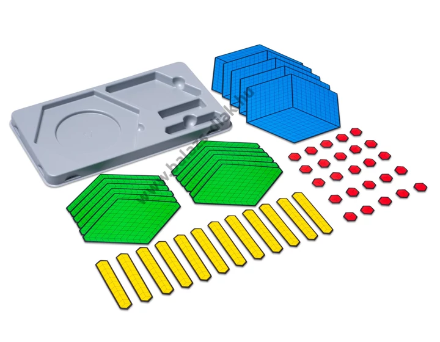
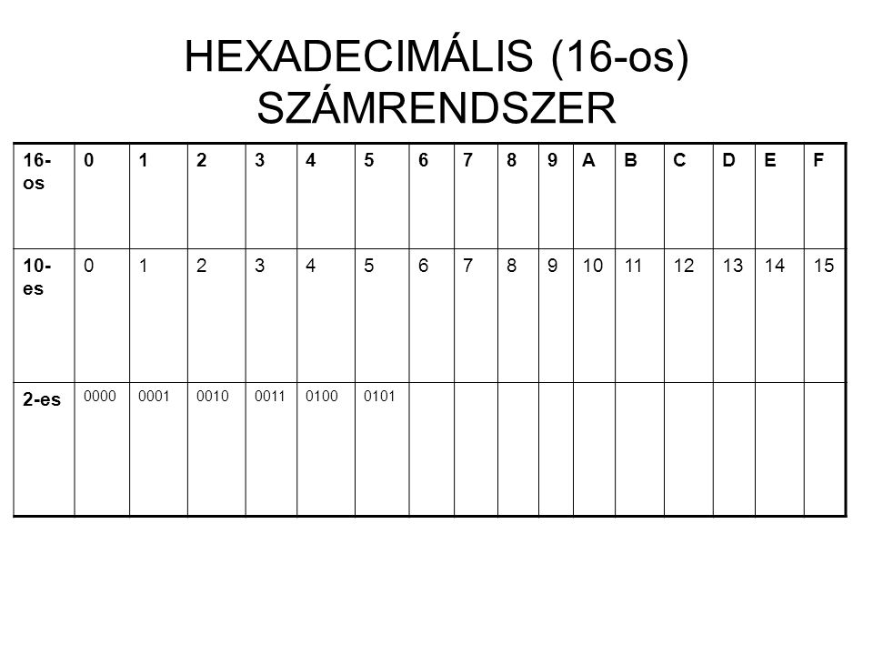

Kettes számrendszer
Ebben a tananyagban megtanulhatod, hogyan kell kettes számrendszerből átváltani 8-as, 10-es illetve 16-os számrendszerbe.
Megtanulom!
Nyolcas számrendszer
Ebben a tananyagban megtanulhatod, hogyan kell átváltani nyolcas számrendszerből 2-es, 10-es illetve 16-os számrendszerbe.
Megtanulom!

Tizes számrendszer
Ebben a tananyagban megtanulhatod, hogyan kell átváltani 10-es számrendszerből 2-es, 8-as illetve 16-os számrendszerbe.
Megtanulom!

Tizenhatos számrendszer
Ebben a tananyagban megtanulhatod, hogyan kell átváltani 16-os számrendszerből 2-es, 8-as illetve 10-es számrendszerbe.
Megtanulom!